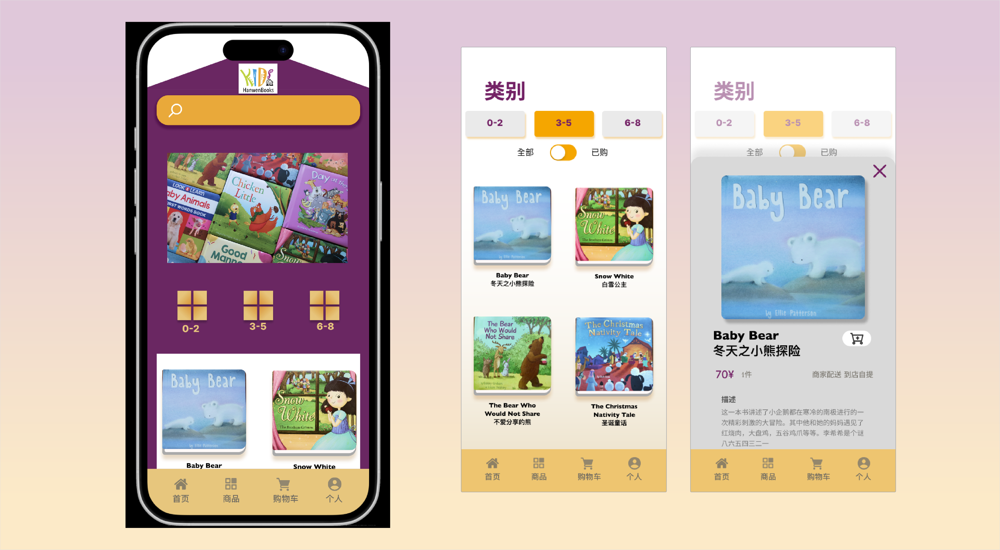
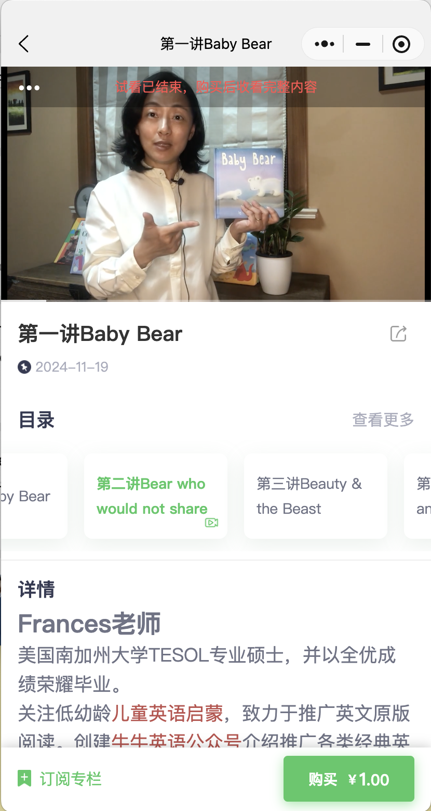
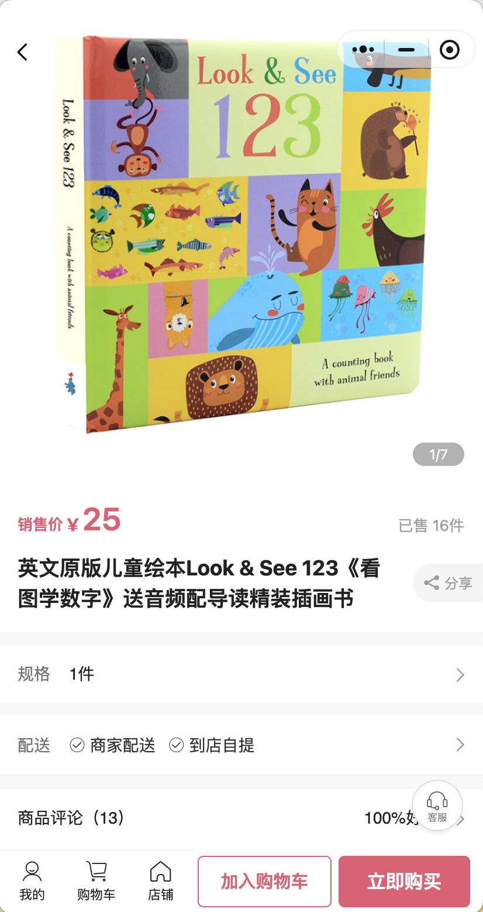
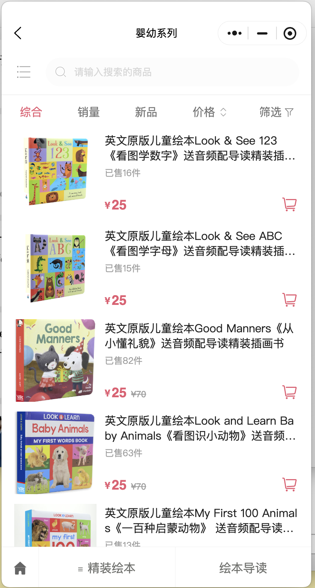

Reading App
Summer 2025
Challenge:
Redesign an existing children's book platform(Hansen Books) with a visually bland, overly white interface that was difficult to navigate. Although the app offered valuable lesson bundles teaching parents how to read stories with their children, these features were poorly surfaced and easily overlooked.
Design (In Progress):
The redesign introduces a more colorful, playful interface inspired by the feeling of a home, creating a warmer and more intuitive experience. The new structure highlights the lesson bundles more clearly, making it easier for parents to discover and use these guided reading resources.
Outcome:
Improve usability and engagement while encouraging more meaningful parent–child reading interactions through better visibility of the platform's learning features.



